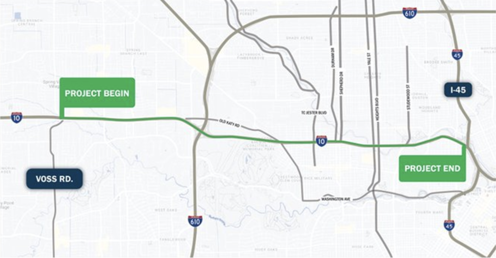

Join us in making the I-10 corridor a cleaner and safer space for all.
The proposed I-10 TxDOT project threatens to disrupt the fabric of Houston, risking environmental damage, community
division, and the wasteful expenditure of tax dollars. Instead of elevating and expanding the highway—actions that would
obscure downtown views and destroy homes and businesses—we propose a transformative vision. Our call is simple: "No
Higher, No Wider!" Let's invest the $347 million in a way that truly benefits Houston by capping the highway to seamlessly connect The
Heights to Montrose, enhancing urban connectivity while preserving our scenic landscapes.
This vision prioritizes community cohesion, environmental protection, and flood mitigation, turning a potential divider
into a unifying landmark. By focusing on expanding public transit and safeguarding against future floods, we can ensure
a resilient and connected Houston for generations to come. Join us in reimagining the I-10 project, not as an expansion,
but as an opportunity to strengthen the heart of our city.
